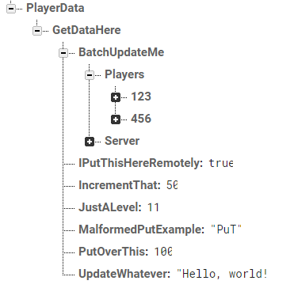

Usage Guide
In the following examples, we will go over and take a look into the Robase Test Database. The structure of which can be seen below.

Although it is not an ideal structure, it is just an example of what one could potentially look like. It is solely used to test Robase functionality and nothing more, you should not read into the naming of these keys as they are display only and provide no functional or tangible purpose outside of testing.
Important
These examples assume you have installed Robase already and have required it with a valid path.
Initialising RobaseService
To begin using Robase you must first initialise it. This requires two parameters: baseUrl and token. You can go here to learn more about acquiring these and how to safely store them.
Danger
For security purposes it is highly recommended that you do not store your Database Url and Database Secrets in plain text in your code. Consider using DataStoreService to handle this securely.
local ExampleRobaseService = RobaseService.new(
"https://your-firebase-realtime-database-url", --> baseUrl
"YourFirebaseAuthTokenSecret" --> token
)
Getting a Robase
You can retrieve a Robase object several ways at any level in your database. You can do this using the :GetRobase() method of RobaseService. This method has no required parameters - so you can access top-level elements in your database without creating new Robase objects for them - though, it is recommended to provide a name and create individual Robase objects for each top-level element you wish to work on, purely for readability-sake.
-
nameThe name of the element in your database that you wish to point the Robase to. -
scopeThe location in your database you wish to search forname. Internally thescopegoes beforenamein the Url, and would be constructed like so:The scope and name inputs are formatted like a directory so they use a "/" to separate keys.https://{database-url}/{scope}/{name}
We will cover using both of these and neither of these in the following sections.
Caution
Do not prefix or suffix your name, keys, or scopes with "/", RobaseService will do this for you.
Providing a name without scope
This is simply put going to search the top-level of your database for the provided name, in our example, we have "PlayerData", so let's set up our Robase there.
local ExampleRobase = RobaseService:GetRobase("PlayerData")
Info
The URL for this would look like this: https://{database-url}/PlayerData.json?auth={token}
Providing a name and a scope
But, what if we want to access a deeper element in our database, and set up a Robase at that point? Well, we can, and it's very simple! Just provide a scope with the name! So for this example, we will access the "Players" array within "BatchUpdateMe".
local ExampleRobase = RobaseService:GetRobase(
"Players", --> "Name" of the key to search for
"PlayerData/GetDataHere/BatchUpdateMe" --> "Scope" of where to search for "Name"
)
Info
The URL for this would look like this:
https://{database-url}/{PlayerData/GetDataHere/BatchUpdateMe}/{Players}.json?auth={token}
Providing no information
This method is used solely to grab the entire database, top-level keys and all! This allows us to perform :GetAsync() requests into any top-level key and get the table or data located at that point, like so:
local ExampleRobase = RobaseService:GetRobase()
Info
The URL for this would look like this:
https://{database-url}/
With subsequent method calls on the Robase adding the key at the end of the Url, followed by the json specifier and auth token key-value.
It's that simple. So now you have your Robase, what next?
Getting Data
One of the fundamental parts of your game will be saving and loading player data. To start, we will be acquiring some data from the database, for this case, we will create a Robase at "PlayerData" and acquire the data located at "GetDataHere".
local ExampleRobase = RobaseService:GetRobase("PlayerData")
local Success, ExampleData = ExampleRobase:GetAsync("GetDataHere")
print(ExampleData)
The above code will print out the table located at "GetDataHere".
Saving data
There are a few saving options in Robase, these are quite similar to DataStoreService:
SetAsyncwill create new data or replace old data at the given key using a PUT request if no method is provided.UpdateAsyncwill modify the data at the given key using a PATCH request.BatchUpdateAsyncwill modify a set of keys using a PATCH request.
The decision to use PUT over POST requests by default was an easy one to make - it's idempotent, meaning successive calls will always provide the same response and will have zero side effects.
Using SetAsync
First, we will cover the basic SetAsync method. This time around, we will create a Robase at "GetDataHere" using the scope parameter to look in "PlayerData".
local ExampleRobase = RobaseService:GetRobase("GetDataHere", "PlayerData")
local NewData = {
Admin = false
}
ExampleRobase:SetAsync("ExtraConfig", NewData)
-- The above is equivalent to the following:
local Success, Result = ExampleRobase:SetAsync("ExtraConfig", NewData)
local Success, Result = ExampleRobase:SetAsync("ExtraConfig", NewData, "PUT")
ExampleRobase:SetAsync("ExtraConfig", NewData, "PUT")
This example first creates a Robase at "GetDataHere" and then creates a new table with a single field: Admin, which is set to false.
We then tell the Robase that we wish to PUT that new field inside a new table inside the database at the key "ExtraConfig". We can do this in several different ways, as shown.
A PUT request will simply check to see if the data already exists at the given key - and replace it if it does - or it will create a new key and add the data we supplied as it's value, in this case a table with a single field of Admin.
Updating your data
In most cases though, you will want to opt for updating your data instead, in this case, we use UpdateAsync.
This method has one key difference from the DataStoreService equivalent: the cache parameter. Robase was made with caches in mind such that you will use fewer requests and can take advantage of the powerful BatchUpdateAsync method. You can extend upon this feature nicely by writing a custom data handler module and having your saving/updating use Write-through - change the database first, and then the cache. Though, we will not be showcasing this functionality here.
Caution
Currently, neither of these methods support retries and this functionality will have to be written at the call site of these methods.
Using UpdateAsync
For this example, we will create a Robase at "PlayerData" and we will be updating the "GetDataHere" key.
local ExampleRobase = RobaseService:GetRobase("PlayerData")
local NewData = {
["UpdateWhatever"] = "How are?!"
}
ExampleRobase:UpdateAsync("GetDataHere", function(oldData)
return NewData
end)
-- Again, the above is also equivalent to:
local Success, Result = ExampleRobase:UpdateAsync("GetDataHere",
function(oldData)
return NewData
end
)
Caution
You can only update or modify keys that are a table, you cannot send a request directly to "UpdateWhatever", this will fail.
Using BatchUpdateAsync
This is where things get a teeny bit more complicated, for this method you must define your callback methods and populate a table with them. This time, we will modify the data located at "BatchUpdateMe" within "GetDataHere".
local ExampleRobase = RobaseService:GetRobase("GetDataHere", "PlayerData")
local NewData = {
Players = {
["789"] = {
Coins = 123456789,
Level = 99
}
},
Server = {
LastUpdated = os.date()
}
}
local Updaters = {
Players = function(oldData)
return NewData.Players
end,
Server = function(oldData)
return NewData.Server
end
}
ExampleRobase:BatchUpdateAsync("BatchUpdateMe", Updaters)
-- Equivalent to:
local Success, Result = ExampleRobase:BatchUpdateAsync("BatchUpdateMe", Updaters)
Incrementing Data
Just like DataStoreService, RobaseService offers an IncrementAsync function which works similarly to the aforementioned DataStoreService method.
Caution
Attempting to increment data that is not an integer will throw an error. Numbers and any other data type are not acceptable types to increment.
Again, we will be creating our Robase at "GetDataHere", but this time we will perform two basic operations on the "IncrementThat" key.
local ExampleRobase = RobaseService:GetRobase("GetDataHere", "PlayerData")
local Success, Result = ExampleRobase:IncrementAsync("IncrementThat")
print(Result) -->> 51
Success, Result = ExampleRobase:IncrementAsync("IncrementThat", 24)
print(Result) -->> 75
Deleting Data
For whatever reason, you have decided to completely wipe some data from your database, why you would want to do this is your own reason, but this method exists, so let's demonstrate it:
local ExampleRobase = RobaseService:GetRobase("GetDataHere", "PlayerData")
local Success, Result = ExampleRobase:DeleteAsync("IPutThisHereRemotely")
print(Result) -->> true
The result returned from DeleteAsync will give you the previously stored data, this is useful for if you've made an oopsie and want to fix it. I'd rather not keep this data deleted, so I'm going to put it back:
Success, Result = ExampleRobase:SetAsync("IPutThisHereRemotely", Result)
print(Result) -->> true
The main use-case that I can think of for wanting to properly use this, ever, is if you provide clients with the option to delete their data from the database.